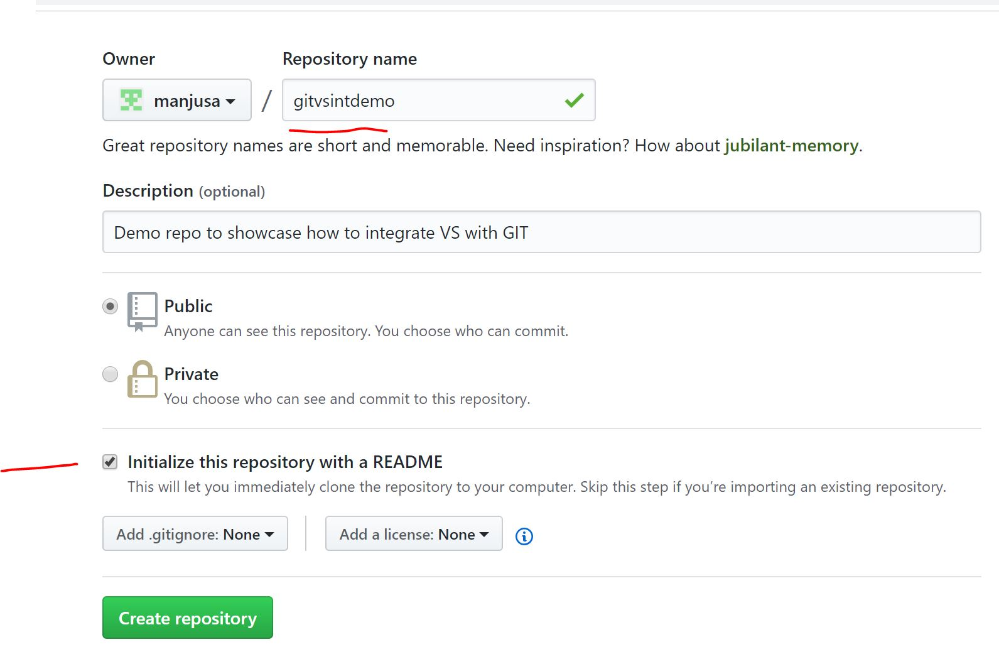
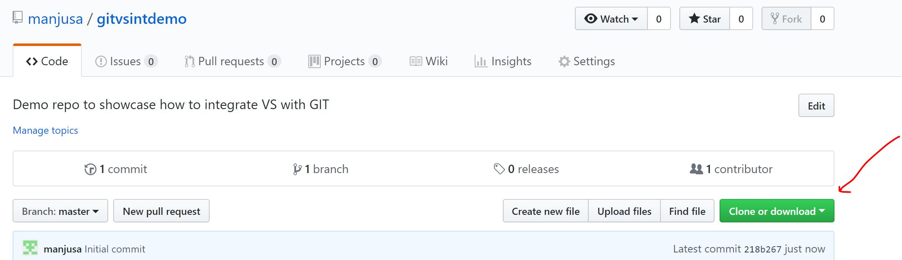
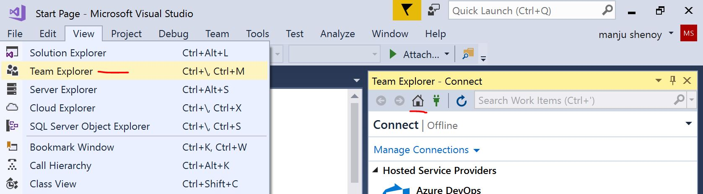
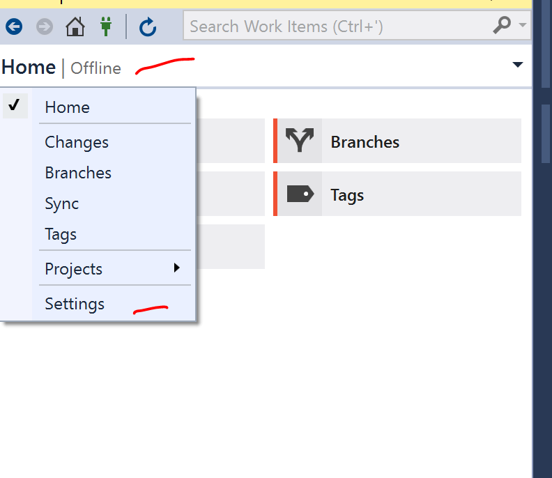
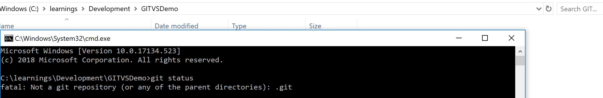

Using Visual Studio 2017 with GIT
In this blog am going to take you through step by step process to integrate VS 2017 with GIT repository.I will also let you know how to create a git repository etc
Software Used:- Visual Studio 20l7
- Creating GIT Repository
- Using GIT in VS2017
- Creating a dummy project and staging,commiting the changes
- Pusing the changes to the repository
- Common errors faced and fixes
- Create a folder in you local machine where you will do the development.I created a folder named "GITVSDemo" in C:\ drive
- Loginto you git hub account(https://github.com/) . Create an accouunt if you dont have one
- After successfully logging into the github account, Create a repostiory by clicking on "New Repository" button.Also,give name of the repo. (eg gitvsintdemo)
 - Ensure above that you create the repo with a "readme" file.This will ensure that a file is created when you create the repo itself
- Now,once the git repository is created, just check the url of the repo.You can click the "clone" button and get the URL of the repo like shown below
 - Now,lets open IDE i.e VS2017 (or the version you have installed).We will also create a project and integrate it with GIT.The source code of the project will be checked into the git repository we created above
- Click on Team Explorer and then click on Home/Offline and click on settings
 - Now click on Settings-→Offline and Manage Connections
 - Open command prompt on windows and go to the dev folder("GITVSDemo" in C:\ drive) and type in "git status"

Doing above,confirms that it is still not a git repository - Now back to VS, and Click on "clone"

- Cloning will create a .git folder in the dev folder("GITVSDemo" in C:\ drive).Also, "git status" will confirm that this folder is now tracked by git repo

- Cloning will create a .git folder in the dev folder("GITVSDemo" in C:\ drive).Also, "git status" will confirm that this folder is now tracked by git repo
- Cloning will create a .git folder in the dev folder("GITVSDemo" in C:\ drive).Also, "git status" will confirm that this folder is now tracked by git repo
SignalR- Connection Management
- Manages Connections automatically
- Broadcasts messages to the connected clients simultaneously
- Can send messages to specific client
- Connection between Client and Server is persistent, unlike HTTP connections which are stateless
In order to understand better, Lets take an eg. Lets assume User 1,User 2,User 3 and User 4 are all connected to a chat room .Now say User 2 types a message. Server receives it and send it all the other 3 clients simultaneously. The same is depicted in the diagram.( signalR1)

Now when I said "Push",there are various varieties of "Push" .Eg are Periodic Polling, Long Polling,ForeverFrame,SSE(Server Sent Events) ,Web Sockets In this blog, am showing the Hubs programming modal though Persistent Connections model is also available but is less popular.
What are Hubs....
- Hubs are classes to implement push services in SignalR
- Abstraction on top of Persistent Connection programming methodology
- Provide a higher level Remote Procedure Call framework(What is RPC…we will see in next section)
- Perfect for different types of messages to send between Server and client
- No need to take care of Serialization/Deserialization etc
- Clients property allows to access all clients connected to hub
- Can Return simple type (eg int,string,long etc) or complex type (objects of complex type) or Task
- Complex objects and arrays of objects are automatically serialized/deserialized to/from JSON
- Communication between Hub on the server side and Client/Browser is JSON
RPC- What is Remote procedure call?
Above, I briefly mentioned about RPC.RPC is a distributed computing methodology. RPC is a concept which enables a computer program to execute a method or a piece of program located even in another computer on a network. In the Object oriented world, there is equivalent to it called Remote Method Invocation (RMI). For eg Java has JavaRMI.SignalR enables us to perform server to client RPCs by providing wrapper functions through APIs which abstracts the complexity of performing RPCs. i.e Server which run .NET core code can call Javascript functions running on the client’s browser.
Lets do a small egample to get a better handle of the same. I have shared the whole source code in the git repository. The git URL is Source Code Link Above source code is to create a ChatRoom for Sports. People based on the interest,can join any room they wish to and chat with people of common interest.Below are the steps to create this application. It incldues all steps i followed,right from scratch to create the project. I have also included a section called "common errors" and fixes to the errorsmay come handy if you come across same issues.
Steps:
- Create a ASP.Net application

- Choose The Application type- I select “Empty”. Give Name “SportsChatRoom”

- When above project is created, you wont have references for SignalR.Below is the screenshot of my references and as you can see there is no "SignalR" or related libraries

- Now lets add Hub class (MainHub.cs).So right click the project and Click on “Add”

- Under “Web” choose “SignalR”.Call the "Hub" class as "MainHub.cs". MainHub gets all the features by extending Hub class from "Microsoft.AspNet.SignalR.Hub" class

- Doing above will create references for signal r library and all references related to Owin

- It also downloads "signalR javascript" and since signalR javascript depends on jquery, it also downloads "jQuery" javascript

- Now lets add Hub class (MainHub.cs).So right click the project and Click on “Add”
- If you want to install the SignalR from Nuget,you can run below command.(Ignore the below command if you have followed above steps and if you see all references related to SignalR (including scripts) and Owin included in your project already) Install-package Microsoft.Aspnet.SignalR
- SingalR servers can be self-hosted, for which it uses self-host library which is built on OWIN. OWIN stands for Open Web Interface for .Net. Every Owin Application has a Startup class where you can register services and inject modules in HTTP pipeline. Now there are quite a few number of ways to bind the startup class with the runtime environment. Below , various approaches are depicted in a diagram

- In the startup class, ensure that you have "app.MapSignalR()" line of code.This single line of code does the setup required for SignalR to work correctly
- Create the startup page
- Create "Index.html" and add it as a “start page”.
- Add “jQuery”,”signalR” and “signalr/hubs” javascript to the index.html’s header.
- I also added “bootstrap.js”. Though bootstrap has nothing to do with signalR, I added it just to create a simple User Interface quickly.Below is how my index html's header looks like

- Once your SignalR application starts successfully,to verify if configuration and everything is related to signalr is done right, go to Chrome Dev tools (F12 on Chrome) and look for sources. If everything is correct, then you will see a "signalr" folder and a javascript file "hubs" downloaded automatically.

Common Errors Faced and Solutions:
- Issue 1: Incase you have "Global.asax.cs" file and you get below error
 Solution to above problem is simple.Ensure that you follow these steps
Solution to above problem is simple.Ensure that you follow these steps
- In the global application class, remove the call to MapHubs.
- Right-click the solution, and select Add, New Item.... In the dialog, select Owin Startup Class. Name the new class Startup.cs (Incase you dont have one)
- Replace the contents of Startup.cs with the following code

- Issue 2: Incase you get an error which says SignalR is not loaded like below
 Solution to above problem is simple.Ensure that you follow these steps
Solution to above problem is simple.Ensure that you follow these steps
- In the HTML file where you have included SignalR,(in this case "index.html"), ensure that signalr javascript is loaded after jquery javascript. Correct order as shown in diagram below is
First, jquery-x.x.x.js, then you should have jquery.signalR-x.x.x.js and then you should have /signalr/hubs. This order is important for the page to load properly
- In the HTML file where you have included SignalR,(in this case "index.html"), ensure that signalr javascript is loaded after jquery javascript. Correct order as shown in diagram below is
First, jquery-x.x.x.js, then you should have jquery.signalR-x.x.x.js and then you should have /signalr/hubs. This order is important for the page to load properly
Source Code For this app
Lets see a quick demo of the app
Demo link is shared below.In the video, I use "Chrome" and "Firefox" just to mimic 2 different users since I have hosted my application locally.(You can also test on one browser by launching them in incognito mode).In real time, it can be any number of users using any browser.
Lets understand the scenario.Assume, there are 2 people(lets call them Bob and Tim ) decide to chat on cricket and join a chat room.
1)Bob,the first User,goes to the website using Firefox and clicks on "Cricket Chat Room" and then enters the name in the popup prompted and click on "Join Room".
2)James,the other User does the same above using Chrome.
After joining room successfully,both of them can share any number of messages in the room .In the demo, you can see that when a user types in message the other gets the message instantly.If any other person joins the room, he too can see and send the messages like these 2 people.This whole scenario is demonstrated in the video.